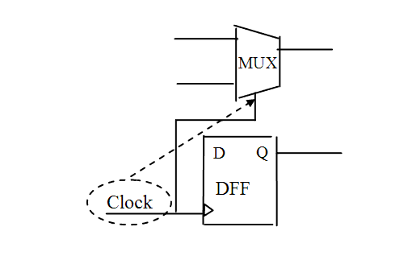

Description
Leda fires for this rule when it detects a clock signal that is connected to the select pin of a multiplexer. You can configure this rule using the rule_set_parameter Tcl command and the MUX_LIST parameter to specify complex multiplexers that you want the tool to examine, but which Leda cannot infer automatically. For example:
leda> rule_set_parameter -rule NTL_CLK31 \
-parameter MUX_LIST -value {MUX1, MUX2}
If you set the MUX_LIST parameter to null, Leda checks only the simple multiplexers that it can infer from the source code. If you set the MUX_LIST parameter to a list of complex multiplexers, Leda checks those plus the simple multiplexers that it infers automatically.Note that this rule fires even if there is some combinational logic on the path from the clock pin to the select pin of the MUX. However, this rule does not fire if there is a sequential (flip-flop or latch) on the path from the clock pin to the select pin of the MUX.
Policy
DESIGN
Ruleset
CLOCKS
Language
VHDL/Verilog
Type
Hardware
Severity
Warning
This is an example of invalid Verilog code, followed by a circuit diagram that illustrates the problem:
module ntl_clk31_top; input Clock; ... wire D_01, net_01, net_02, net_03; reg D_11; ... GTECH_FD1 U0(.D(D_01), .CP(Clock1), .Q(D_11)); GTECH_MUX U2(.A(net_01), .B(net_02), .S(Clock), .Z(net_03); // NTL_CLK31 fires -- clock pin is connected to select pin of the MUX ... endmodule